Open topic with navigation
The OAERAP solver
The OAERAP solver employs an outer approximation (OA) algorithm for the solution of the MINLP. As outlined in the algorithm below, this
involves solving a sequence of simpler optimisation problems, including nonlinear programs (NLPs) at steps 1 and 3 and mixed integer linear programs
(MILPs) at step 2. The OAERAP code has been designed so that it can make direct use of any CAPE-OPEN compliant NLP and MILP solvers (see the gPROMS
System Programmer Guide) without the need for any additional interfacing or modification.
Outline of the OAERAP algorithm for the solution of a MINLP problem (minimisation case)
Given initial guesses for all optimisation decision variables, both discrete (y) and
continuous (x):
Step 0: Initialisation
-
Set the objective function of the best solution that is currently available, 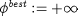.
-
Set the objective function of the best solution that may be obtained, 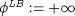.
Step 1: Solve fully relaxed problem
-
Solve a continuous optimisation problem (NLP) treating all discrete variables as continuous (i.e. allow them to take any value between
their lower and upper bounds) to determine optimal values 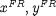 of the optimisation decision variables and of the objective function,  .
.
-
If above problem is infeasible, terminate: original problem is infeasible as posed.
-
If all discrete optimisation decision variables have discrete values at the solution of the above problem, then terminate: optimal solution of original problem is 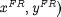 with an objective function value of 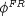.
Step 2: Solve master problem
-
Construct a mixed integer linear programming (MILP) problem which:
-
involves appropriate linearisations of the objective function and the constraints carried out at the solutions of all continuous
optimisation problems solved so far,
-
excludes all combinations of discrete variable values that have been considered at step 2 so far.
-
Solve the above MILP problem to determine optimal values of both the continuous and discrete variables 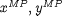, and the corresponding value of the objective function 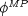.
-
If the above problem is infeasible or if 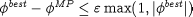, then terminate: there are no more combinations of discrete variables that can be
usefully considered.
-
If 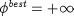, then original problem was infeasible.
-
Otherwise, the optimal solution is 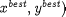 with a corresponding objective function value of 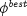.
-
The MILP provides an improved bound on the best solution that may be obtained; therefore, update 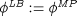.
Step 3: Solve primal optimisation problem
-
Fix all discrete optimisation decision variables to their current values.
-
Solve continuous optimisation problem (NLP) to determine:
-
If the above NLP is feasible and 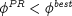, then an improved solution to the original problem has been found; record its details by setting 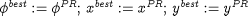.
Step 4: Iterate
The OAERAP solver also includes an equality relaxation (ER) scheme for handling equality constraints. It should be emphasised that, in the case
of optimisation problems defined in gPROMS, this relaxation is applied only to any ENDPOINT_EQUALITY constraints that may appear in the Optimisation
Entity.
The algorithm described above is guaranteed to obtain the globally optimal solution to the optimisation problem posed only if the latter is
convex. This is unlikely to be the case in many problems of engineering interest. An augmented penalty (AP) strategy is employed in order to increase
the probability of a global solution being obtained.
The algorithmic parameters used by OAERAP along with their default values are shown below. This is followed by a detailed description of each
parameter.
"OAERAP" [
"ConvexityBasedTerminationCriterion" := TRUE,
"MaxIterations" := 10000,
"MaxIterNoImprovementNLPSubProblem" := 1,
"NLPSubProblemInitialGuesses" := "MILPMasterProblem",
"OptimisationTolerance" := 0.0001,
"OutputLevel" := 0,
"MILPSolver" := "LPSOLVE",
"NLPSolver" := "NLPSQP" ]
- ConvexityBasedTerminationCriterion - A boolean value, TRUE or FALSE; default TRUE
-
Flag to select the termination criterion based on convexity.
If set to FALSE, the optimisation will be terminated when either of the following condition is satisfied, and the optimal solution will be the point corresponding to the best objective function value of the primary NLP:
number of iterations >= MaxIterations
or
number of successive iterations without improvement in the objective function of the NLP subproblem >= MaxIterNoImprovementNLPSubProblem.
- MILPSolver - A quoted string specifying a mixed integer linear programming solver.
-
Specifies a CAPE-OPEN compliant solver to be used for the solution of the mixed integer linear programming (MILP) problems at step 2 of the
algorithm described above.
- MaxIterations - An integer in the range [1, 100000].
-
The maximum number of iterations involving step 2-4 of the algorithm described above. This is essentially the maximum number of distinct
alternatives to be considered by the algorithm
- MaxIterNoImprovementNLPSubProblem - An integer number in the range [0, 100000]; default 1
-
Maximum number of successive iterations without improvement in the objective function of the NLP subproblem.
- NLPSolver - A quoted string specifying a nonlinear programming solver.
-
Specifies a CAPE-OPEN compliant solver to be used for the solution of the nonlinear programming (NLP) problems at steps 1 and 3 of the
algorithm described above.
- NLPSubProblemInitialGuesses - either "MILPMasterProblem" or "FullyRelaxedNLP"
-
Determines the source of initial guesses for the NLP Primal Optimisation.
The OAERAP algorithm employs two methods of obtaining initial guesses for the NLP Primal Problems (step 3 above).
The first is to use the solution of the fully-relaxed problem (step 1) as initial guesses for the solution of the primal problem (step 3)
at each iteration. To use this method, specify "NLPSubProblemInitialGuesses" := "FullyRelaxedNLP".
An alternative approach is to use the solution of the MILP master problem, at the current iteration, to provide the initial guesses for the
NLP primal problem. This is the default method, specified by setting "NLPSubProblemInitialGuesses" := "MILPMasterProblem".
The method that will be most effective will depend on the problem being solved. One advantage of obtaining initial guesses from the MILP
master problem is that because the discrete variables in the NLP problem will be set to the values in the solution of the MILP, the values of the
continuous variables will be consistent with the discrete ones and so should provide a good initial guess for the NLP problem. A common example
of this behaviour is process synthesis problems, where binary variables can be used to represent the existance of a process in a flowsheet. If
the solution of an MILP implies that a unit does not exist, then the MILP of step 2 will force some related continuous variables (e.g. the flows
through these units) to be zero and these are, of course, excellent initial guesses for the NLP problem (by contrast, these might not be zero in
the solution of the fully-relaxed NLP). However, if the problem is highly non-linear, then the solution of the linearised equations in the MILP
may not be such a good initial guess for the NLP. In these cases, it may be better to use the solution of the relaxed NLP as the initial guess
for each NLP primal problem.
- OptimisationTolerance - A real number in the range [0.0, 1.0].
-
The optimisation tolerance 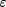 used in the termination criterion at step 2 of the algorithm described above.
- OutputLevel - An integer in the range [-1, 0].
-
The amount of information generated by the solver. The following table indicates the lowest level at which different types of information
are produced: